Entre Cerros
y
Balas
Una experiencia de realidad virtual en las quebradas de Jujuy
Deslizá para cabalgarPremisa
La propuesta consiste en desarrollar una experiencia de realidad virtual en Unreal Engine ambientada en Jujuy, inspirada en el contexto histórico de las luchas por la independencia en el norte argentino. El jugador se pondrá en el lugar de un gaucho que atraviesa los paisajes jujeños a caballo, enfrentándose a las tropas realistas que intentan detener su avance.
Jugabilidad
La cooperación estará dividida entre los dos gauchos. Mientras uno se encargará de controlar el caballo, esquivar obstáculos y recoger recursos como munición o vida.
El otro deberá utilizar su arma para enfrentarse a los soldados realistas y proteger a su compañero.
De esta manera, cada jugador tendrá una función diferente pero necesaria para superar el recorrido.
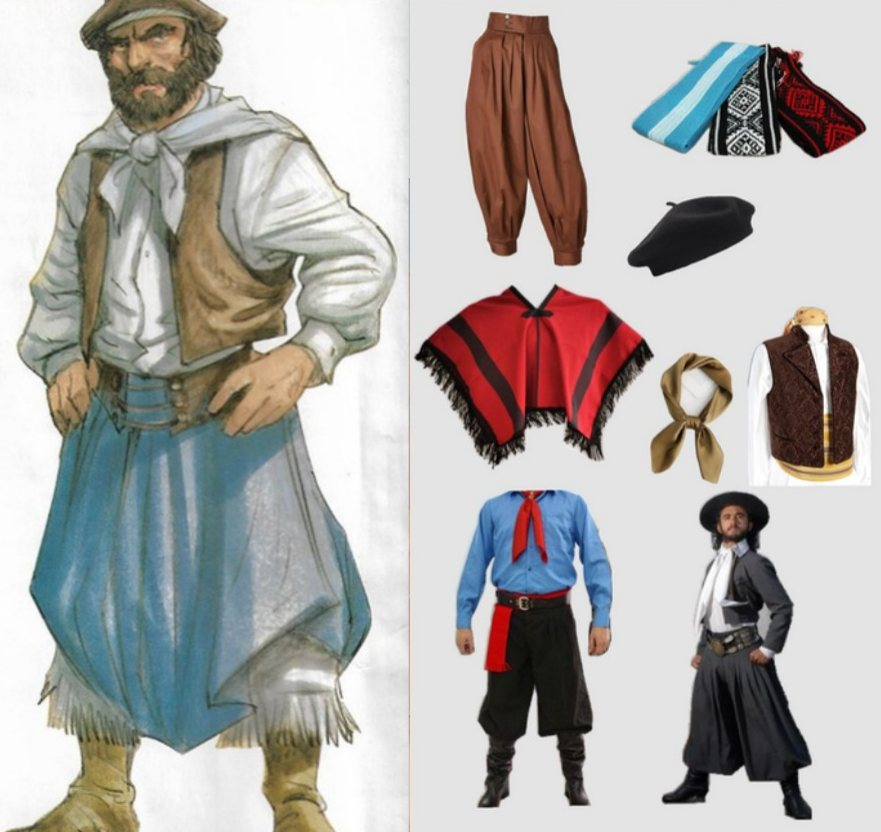
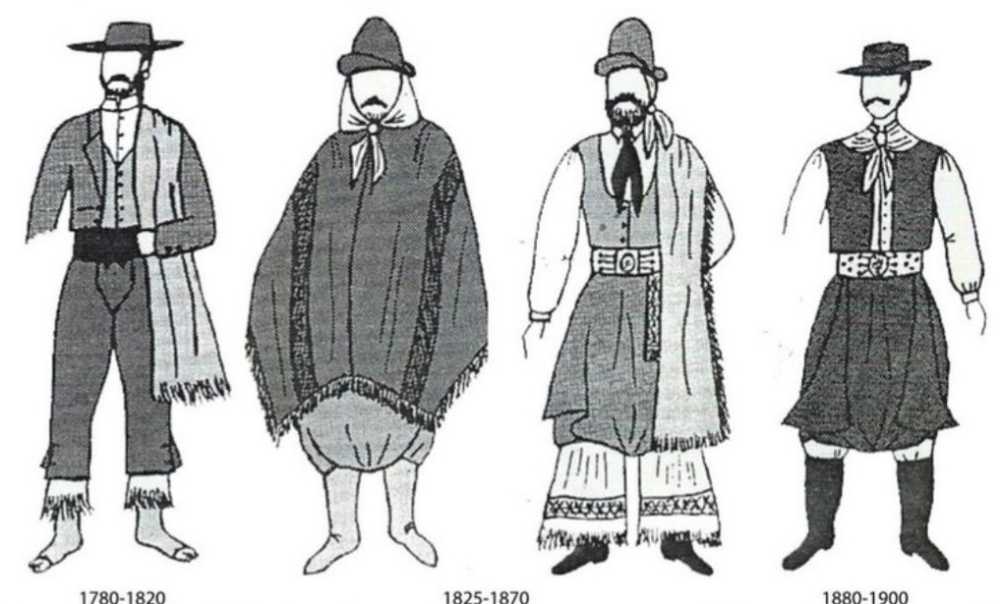
Enemigos
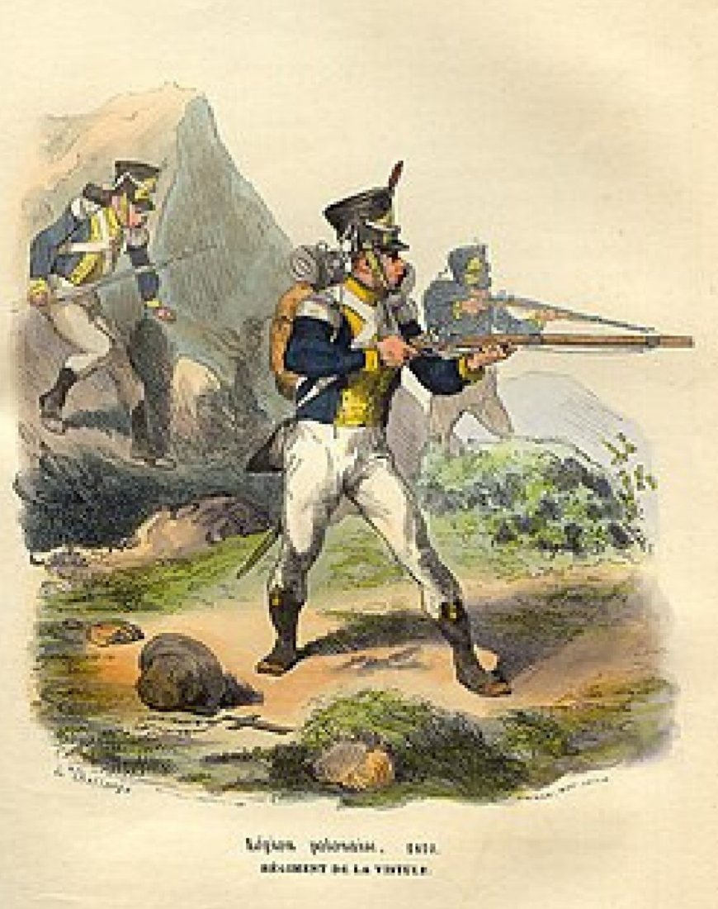
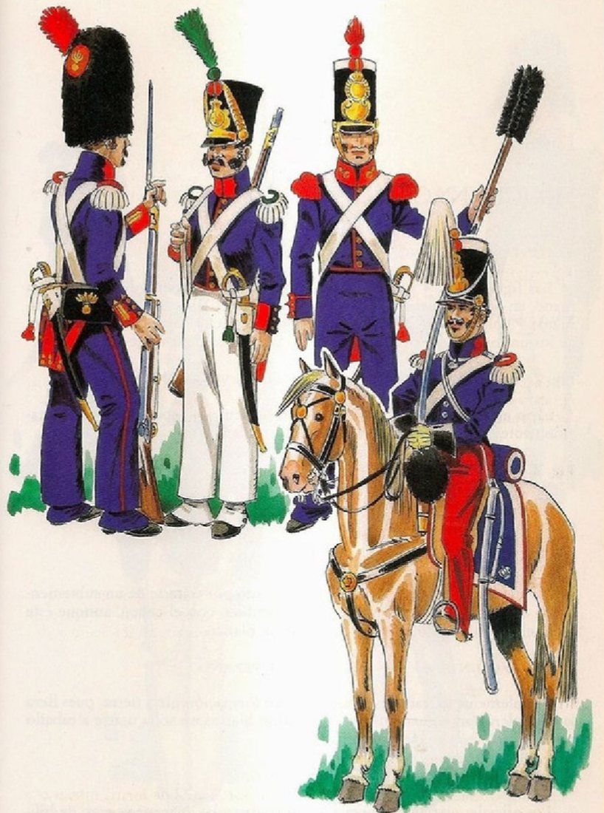
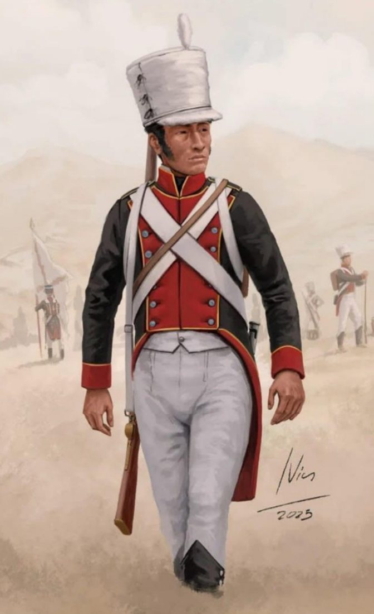
Las tropas realistas te esperan en lo alto de los cerros
Entorno
El entorno tendrá una fuerte identidad jujeña, utilizando como inspiración los cerros, quebradas, caminos de tierra y paisajes característicos de la Quebrada de Humahuaca.
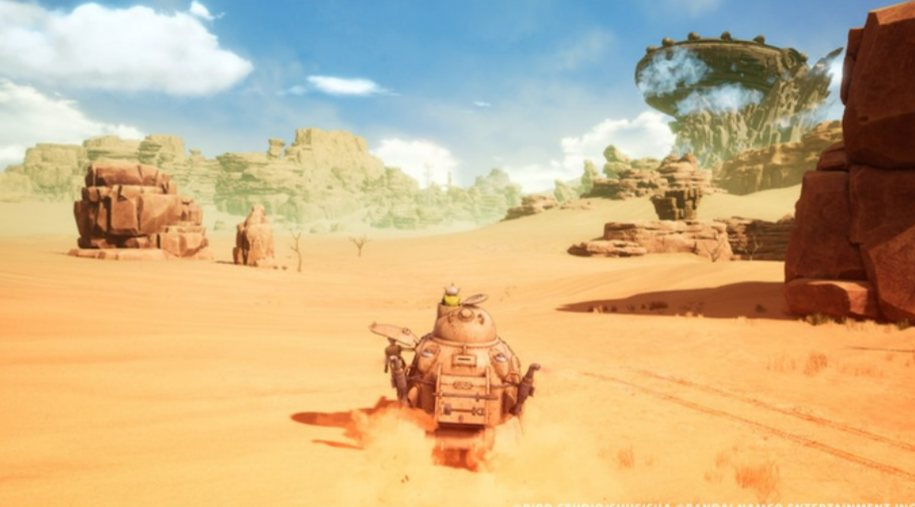
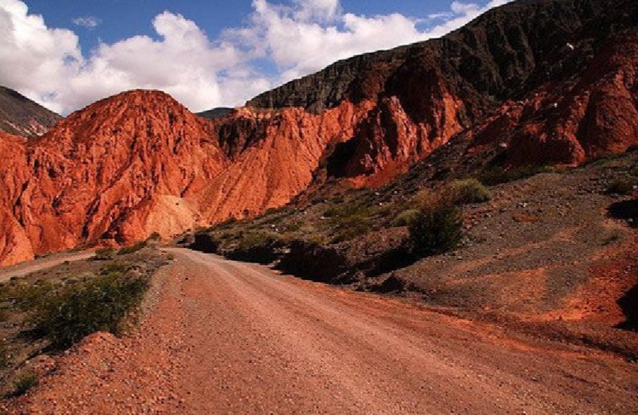
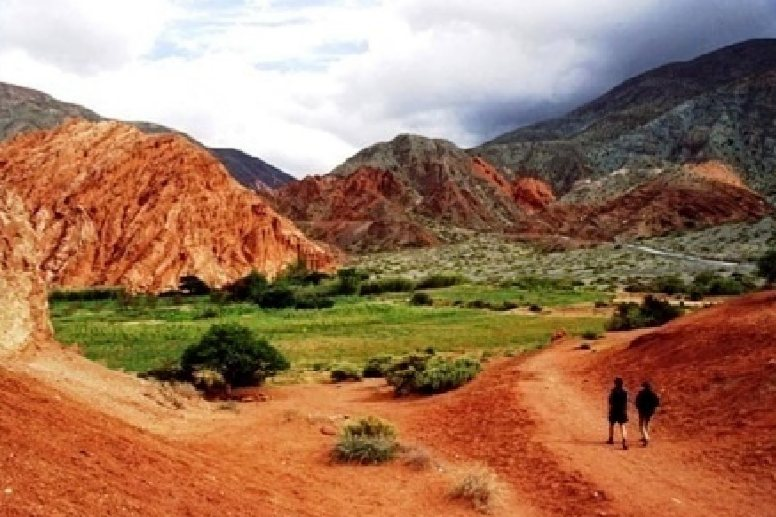
Referencias
Se busca trasladar la experiencia de los shooters arcade cooperativos para 2 jugadores al formato de realidad virtual. La idea es ofrecer una experiencia dinámica, accesible y de ritmo ágil, donde los jugadores avanzan de forma constante enfrentando enemigos y obstáculos que requieren reflejos rápidos.
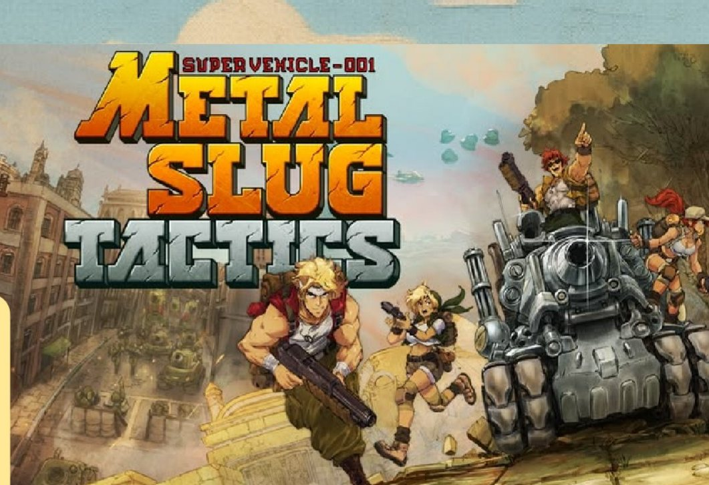
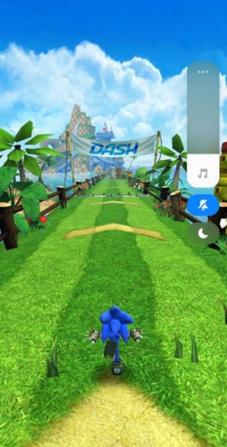
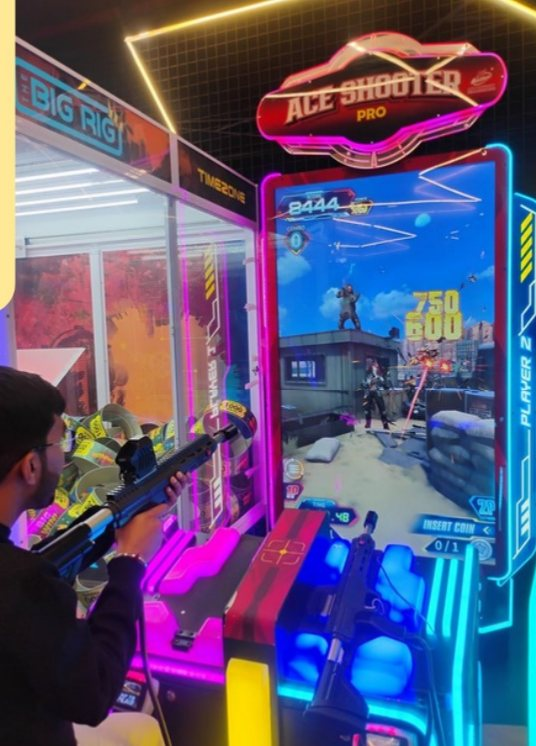
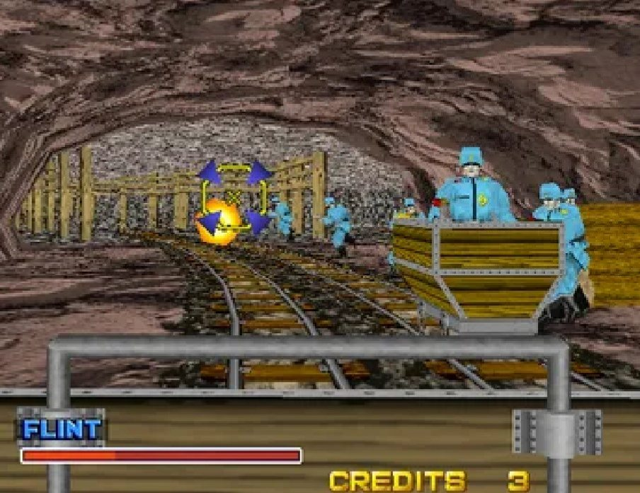
¡A caballo!
Probá una demo web del recorrido: cabalgá por la quebrada, disparale a las tropas realistas y recogé munición y vida en el camino.
¡Muchas
Gracias!
Entre Cerros y Balas · Ochoa Cesar